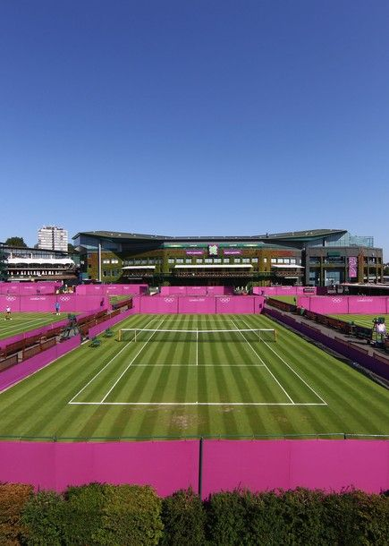

Shift 11 Blue C061 7.30am - 2.30pm
Sunday 5th August 2012
Up and about at 5.45am. Downloaded paper and set off for Epping Tube. Car park was surprisingly full for a Sunday
morning. Caught the first tube of the day at 6.36am and was sitting next to a T2 driver based at FDX. They only have the basic 3 shifts -
6.00am to 4pm; 2pm to 12pm and 10pm to 8.00am. Some of their T2 drivers have done umpteen shifts without driving anywhere as their people are in
Hotels close to FDX and don't go anywhere else. There was a defective train at Leyton so we sat at Leytonstone for about 20 minutes. The driver did suggest that people going to Stratford could
get the bus from outside the station so quite a few people got off. Not the local woman who seemed to be phoning everyone she knew to say, loudly,
that she was stuck on a train. I had plenty of time in hand and got to FDO at 7.45 for my 8.00am start.

Assigned to the Blue team and assigned Olympic Family Hotels (OFH) as soon as breakfast was finished. Had bacon roll with ketchup and was
leaving FDO at 8.05am. Slightly different route to Curzon Street as the Embankment was shut for the Women's Marathon so up Minories, past St.
Pancras and Regents Park before Baker St/Oxford St to Marble Arch. Joined the very back of the staging queue. Some of the others reckoned we
would do bugger all but I pointed out that at 9.15am most of the IOC family would still be having breakfast. I was right. We started moving
forward and didn't really stop.
I got to the front of the queue at 9.45am and picked up 2 German distinguished IOC guests who were going to Wimbledon. They wern't too
distinguished. They were going to watch the bronze medal match on Court 1. The heavens opened en route and kept going for most of the morning.
Got to the Wimbledon drop off point no problem. I was asked to join the on demand Wimbledon service. Parked up at the T3 staging area where I
sat for about 2 hours so got chance to read my newspaper and spot John McEnroe arriving in a media car. One of the transport guys told us we could get a temporary pass to use the facilities inside Wimbledon so I decided to check it out. You had
to go to the far end of the transport tent and up the stairs to get the upgrade pass. From there it was back to the security tent to go through
mag and bag. Andy Murray was arriving at the players entrance as I went in. Completed my pit stop and enjoyed my view of Wimbledon decked out
in Olympic Livery.
Back at the car I radioed in that I had been on demand for 2 hours, there was no demand and there were 10 people ahead of me in the queue. I
was told to go back to Curzon Street. Passed Battersea Dogs and Cats Home on the way back which took us over Vauxhall Bridge past the MI6
building. There was no room at Curzon Street so was diverted to the tiny Carrington Street NCP car park. So small and tight I ended up on the
roof. After a bit they started playing Wacky races moving us about. I decided we would be forgotten up there, and I was close to shift end I
told them I was leaving. Eventually got through on the radio to confirm that. Had to wait for three cars to come up before I could go down. One
way in and out. Don't want to go in there again. Journey back was the Southern alternative, back over Vauxhall Bridge, round the Elephant &
Castle and back over a rather busy Tower Bridge. Wasn't sure that I could get back onto the A13 route so as the Games lanes wern't in operation
I went back on the A11 and into FDO via Pudding Mill Lane. Was checked out and off into the Olympic park by 3.00pm. Got to Park Live but there
was a huge queue to get in. Watched Andy Murray win the second set stood in a large crowd outside but then headed off home. As I arrived on
Platform 6 it was announced that Andy Murray had one the gold medal.